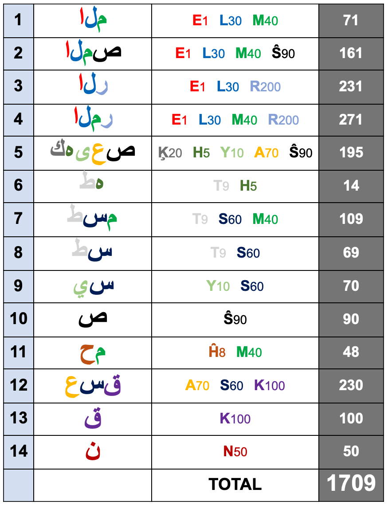
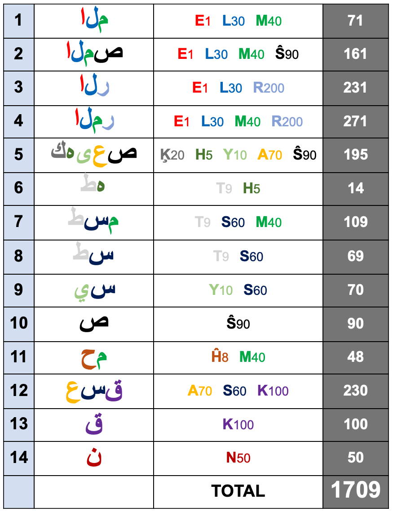

17 01 2280 15 49 31 = 19 x 895383166049
17 1 2280 = 19 x 90120
2280 = 19 x 120 = 114 + 19 x 114
 Messenger of The Covenant(3:81) Dr. Rashad Khalifa has find both Miracle 19 in THE HONOURABLE GLORIOUS QURAN and Time(Year) of Resurrection Day by doing research on 7 pairs of GREAT QURAN. In Year 2015 I blessed by SUPREME ELEGANT MERCIFUL KING OWNER ALLAH to understand meaning of oaths in Chapter 75 Resurrection but unfortunately then, I hide this "exact" knowledge until today(25.01.2023) and I will no more keep this exact clock as a secret only for my self rememberance WITH WILL AND MERCY OF MY SACRED & SUPREME KING ELEGANT!
Messenger of The Covenant(3:81) Dr. Rashad Khalifa has find both Miracle 19 in THE HONOURABLE GLORIOUS QURAN and Time(Year) of Resurrection Day by doing research on 7 pairs of GREAT QURAN. In Year 2015 I blessed by SUPREME ELEGANT MERCIFUL KING OWNER ALLAH to understand meaning of oaths in Chapter 75 Resurrection but unfortunately then, I hide this "exact" knowledge until today(25.01.2023) and I will no more keep this exact clock as a secret only for my self rememberance WITH WILL AND MERCY OF MY SACRED & SUPREME KING ELEGANT!
Let me explain to you:
Before finding Miracle 19 WITH WILL OF THE SUPREME ALLAH, Rashad Khalifa started His research ONLY FOR he wondered Meanings of Mysterious Alphabets of HONOURABLE SACRED GREAT QURAN (Muqatta'at Letters): 7 Pair (14) Letters composing 7 Pair (14) Letter Groups, which came in front of 29 suras that composes 2/3 Volume of THE FINAL TESTAMENT: "HONOURABLE QURAN" AND TOTAL ABJAD VALUE of that 7 Pair (14) Letter Groups IS 1709. Hence He saw important meaning of "giving 7 pairs (to Prophet Muhammad)" in verse 15:87 as He applied verses 15:98 and 15:99 and prostrate to SACRED KING SUPREME ELEGANT 1 OWNER ALLAH in order to attain certainty!
...
15:67 The people of the city came joyfully.
15:68 He said, "These are my guests; do not embarrass me.
15:69 "Fear GOD, and do not shame me."
15:70 They said, "Did we not enjoin you from contacting anyone?"
15:71 He said, "Here are my daughters, if you must."
15:72 But, alas, they were totally blinded by their lust.
15:73 Consequently, the disaster struck them in the morning.
15:74 WE turned it upside down, and showered them with devastating rocks.
15:75 This is a lesson for those who possess intelligence.
15:76 This will always be the system.
15:77 This is a sign for the believers.
15:78 The people of the woods also were transgressors.
15:79 Consequently, WE avenged from them, and both communities are fully documented.
15:80 The people of Al-Hijr disbelieved the messengers.
15:81 WE gave them OUR revelations, but they disregarded them.
15:82 They used to carve secure homes out of the mountains.
15:83 The disaster hit them in the morning.
15:84 What they hoarded did not help them.
15:85 WE did not create the heavens and the earth, and everything between them, except for a specific purpose. The end of the world will come, so treat them with benign neglect.
15:86 Your Lord is The Creator, The Omniscient.
15:87 WE HAVE GIVEN YOU 7 PAIRS, AND THE GREAT QURAN!
15:88 Do not be jealous of what we bestowed upon the other (messengers), and do not be saddened (by the disbelievers), and lower your wing for the believers.
15:89 And proclaim: "I am the manifest warner."
15:90 WE will deal with the dividers.
15:91 They accept the Quran only partially.
15:92 By Your Lord, WE will question them all,
15:93 about everything they have done.
15:94 Therefore, carry out the orders given to you, and disregard the idol worshipers.
15:95 WE will spare you the mockers,
15:96 who set up another god beside GOD. They will surely find out.
15:97 WE know full well that you may be annoyed by their utterances.
15:98 You shall sing the praises of Your Lord, and be with the prostrators.
15:99 And worship your Lord, in order to attain certainty.
Dr. Rashad Khalifa has found that Abjad Value of 7 Pair (14) Letter Group of SACRED GREAT HONOURABLE QURAN gives Moon based Hijri Year 1709 = 2280 A.D. = 120 x 19 is The Year Universes will be End by ALMIGHTY ALLAH: www.masjidtucson.org/quran/appendices/appendix25.html
18:9 Why else do you think WE are telling you about The People Of The Cave, and THE NUMBERS CONNECTED WITH THEM? They are among OUR Wondrous Signs.
18:21 WE Caused them to be discovered, to let everyone know that GOD's Promise is TRUE, and To Remove All doubt concerning THE HOUR (OF THE RESURRECTION). The people then disputed among themselves regarding them. Some said, "Let us build a building around them." Their Lord is the best knower about them. Those who prevailed said, "We will build a place of worship around them."
18:25 They stayed in their cave 300 years, increased by 9.
SACRED ALMIGHTY KING SUPREME ELEGANT MERCIFUL ALLAH, has emphasized both number 300 and 309 by telling that "People of The Cave has stayed in their caves 300 years, increased by 9." instead of directly telling that they remained in their caves just "309" years. By doing so, SUPREME ELEGANT has removed All doubts regarding to THE HOUR OF THE RESURRECTION as HE told in verse 18:21 & HE CREATED A Wondrous Sign as HE told in verse 18:9!
Because:
When Dr. Rashad Khalifa has announced THE YEAR WHEN THIS WORLD WILL END,
We are in Hijri Year 1400 (7 Thousand Pair) and Gregorian Year 1980
that means, when TIME OF THE END OF THE WORLD IS ANNOUNCED;
there is:
2280 - 1980 = 300 Gregorian Years
1709 - 1400 = 309 Hijri Years
remained to THE END OF THE WORLD & TO THE DAY OF THE RESURRECTION!
2280 = 114 + 19 x 114 = 19 x 120
And If We start counting words from the beginning of verse 18:9 OF HONOURABLE SACRED GREAT QURAN that says:
18:9 Why else do you think WE are telling you about The People Of The Cave, and THE NUMBERS CONNECTED WITH THEM? They are among OUR Wondrous Signs.
Word "300", is The 309th. Word!
And Prophet Muhammad was born at 571 A.D. and after 1709 "sun based" year later from birth of Prophet Muhammad: 571 + 1709 = in 2280 A.D. universes are ending by 1 GOD
beware! YEAR 2280 A.D. IS ALSO 1709 th. Hijri Moon Based Year
15:87 WE HAVE GIVEN YOU 7 PAIRS, AND THE GREAT QURAN!
1709 = 2280
Person in verse 75:2 of HONOURABLE QURAN has take a photo of her hand and fingers and send it to me before reading Chapter 75 of HONOURABLE QURAN: "RESSURRECTION" to me at beginnings of Year 2015 Gregorian..
20:15 "The Hour (end of the world) is surely coming; I will keep it almost hidden, for each soul must be paid for its works."
And 2015 is The 1709th. Composite Number, which is THE Year World Will Be End in Hijri Moon Based Calendar WITH WILL OF THE SACRED KING SUPREME ELEGANT!
and abjad value of surname of person whom SUPREME ELEGANT has swear on her in verse 75:2> is 145 = "FİDAN"
and abjad value of name of person whom SUPREME ELEGANT has swear on her in verse 75:2> is 287 = "RABİA"
and abjad value of verse 75:2 of HONOURABLE SACRED GLORIOUS QURAN is 2 X 287 = 574

and she has borned in 24 May of 1988 which is 145th. Day of That Year .. And She used to blame me a lot ... as told in verse 75:2 in HONOURABLE QURAN. After sending me photo of her hand, she started to read me Sura 75 Resurrection by Telegram Voice Call as we always read each other Chapters of HONOURABLE SACRED GREAT QURAN! But this time I have understand that this Sura and Reading is specificially for me WITH WILL OF THE SACRED KING SUPREME ELEGANT MERCIFUL ALLAH as HE points out in verse 75:18.
& Hence couple of days ago she and I have talked about Year of End of The World and she wondered if It is 1709 or 1710 and I also wondered specific day hence I knew that 1709 is correct Hijri Year and 1710 is false date! Hence 7 Pairs gives 1709 not 1710! So I just listened her without interrupting her reading and I even don't want to immediately tell her beforehand that according to verse 75:8 of THE SACRED HONOURABLE GREAT QURAN, We can look Lunar Eclipse Time Calculations Calendar of NASA between time interval of intersection of "Hijri Year 1709 = 7 Pairs" and "Gregorian Year 2280 = 19 x 120"...
Because I had blindly tried to guess The "Day" of The Resurrection in that intersection interval of Hijri Year 1709 and Gregorian Year 2280 and said "blindly" that it should be the first day of that intersection and she had severly blamed me for this because of that I have no evidence for this "first day" claim "as soon it turned out that she was right..." before her this specific reading of Chapter 75 to me.. I didn't immediately tell her because I think there could be more than 1 lunar eclipses.. and it turned out it is :D and even so it turned out it is "the first one" of 3 eclipses in that intersection interval of Hijri Year 1709 and Gregorian Year 2280...
and she was the sign (145) for TIME OF THE RESURRECTION DAY... And SACRED KING SUPREME ELEGANT MERCIFUL OWNER ABSOLUTE ALMIGHTY ALLAH Has Chose "her surname (abjad of it 145)" & "her birthday (145th. day of year 1988)" & "her hand & fingers photo that she sended me (14+5 = 19 bones in her human hand and generally speaking for all humans: "14 Phalange bones of fingers of hand and foot & 5 Metacarpal bones of middle part of hand and foot")" & "her reading of Chapter 75 Resurrection" & "her critics of me regarding my blind guess for Date of Day of Resurrection" as a "sign" for "choosing which lunar eclipse is the correct one"...

After 6 months later she has read Chapter 75 to me I have made a long research and wrote a long Turkish Article about "Time of Resurrection Day" at my blog at that time which is Hayatı.Sorguladınmı.com which you can read copy of that article from "here".
And after publishing that article I have told him that I am The Exact Knowledge of The Hour so I am The Ressurrection of The Messiah Jesus Son of Mary SLAVE OF SACRED KING SUPREME ELEGANT 1 GOD! She used to telling me that "she believes in me that I am The Messenger of ALLAH and that she waits a Messenger to her community" but she has never accepted that I am The Ressurrection of The Messiah Jesus Son of Mary according to verse 43:61 of THE HONOURABLE SACRED GREAT GLORIOUS QURAN OF THE 1 ABSOLUTE GOD which says:
43:61 And surely He (Jesus) is The Knowledge of The Hour (OF THE RESSURRECTION). So don't be suspicious of it(HOUR) and follow me, this is the right way!
And I am THE SIGN OF THE SACRED KING SUPREME ELEGANT FOR RESURRECTION & even though I showed her the city I have born & lived my all life to this day (Istanbul/Constantinople) has a shape of a human which praying to SUPREME ALLAH (salat) while looking to direction of salat: Kaaba in Mekka in Arabia & I told her what SUPREME KING ELEGANT has showed me:

SUPREME ELEGANT MERCIFUL 1 GOD ABSOLUTE has talked me at night of 361 th. (19 x 19) Day of year 2014 (19 x 106) at night of 27.12.2014 (2+7+1+2+2+0+1+4 = 19)
and word beled(city) occurs in all Quran as 5 times as beledet (cities) and 14 times as beled (city)
Even all of this signs she didn't believed that SUPREME ELEGANT has resurrected HIS SLAVE me: Jesus
Abjad Value of arabic word "Son of Mary", ٱبْنُ مَرْيَمَ is 343 = 19 x (9x2).0526 ...
 I have borned in 1992/05/26 UTC+3 07:34
I have borned in 1992/05/26 UTC+3 07:34
City which signifies me geographically Constantinople/İstanbul will prostrate to MY SACRED KING SUPREME OWNER ELEGANT 1 UNIQUE MATCHLESS UNEQUAL ABSOLUTE ALLAH when I will be 32 years old in (26.5.2023 UTC+3 07:34 in my 32th. birthday) & (look name of Sura 32 is "Prostration") and its citizens who disbelieved in me will be destroyed by SACRED KING SUPREME ELEGANT 1 ABSOLUTE UNEQUAL GOD WHO SEND ME both before doomsday IF THEY DO NOT REPENT TO THE SACRED & SUPREME KING ELEGANT OWNER
and also at 5th. Month 14th. Day of Hijri Year 1709 at UTC 15:49:31 "when the moon is eclipsed" together with 7 Universes!
BELIEVE IN ME TO THE SLAVE OF THE SUPREME ELEGANT!
My Name is 19 Letters: "ABDURRAHMAN AYYILDIZ"
Chapter 75 The Resurrection
75:0 IN THE NAME OF ALLAH THE ELEGANT THE MERCIFUL!

75:1 I swear to DAY OF RESURRECTION.

75:2 And I swear to the blaming soul.
75:3 Does the human being think that WE will not reconstruct his bones?
 

75:4 Yes indeed; WE are able to reconstruct his finger tip.
75:5 But the human being tends to believe only what he sees in front of him.

75:6 He asks, "When is Day of The Resurrection?"
75:7 Once the vision is sharpened.
75:8 And the moon is eclipsed.
75:9 And the sun and the moon crash into one another.

75:10 The human being will say on that day, "Where is the escape?"
75:11 Absolutely, there is no escape.

75:12 To your OWNER, on that day, is the final destiny.
75:13 The human being will be informed, on that day, of everything he did to advance himself, and everything he did to regress himself.
75:14 The human being will be his own judge.
75:15 No excuses will be accepted.
75:16 Do not move your tongue to hasten it.
75:17 It is WE who will collect it into QURAN.
75:18 Once WE recite it, you shall follow such a QURAN.
75:19 Then it is WE who will explain it.
75:20 Indeed, you love this fleeting life.
75:21 While disregarding the Hereafter.
75:22 Some faces, on that day, will be happy.
75:23 Looking at their OWNER.
75:24 Other faces will be, on that day, miserable.
75:25 Expecting the worst.
75:26 Indeed, when (the soul) reaches the throat.
75:27 And it is ordered: "Let go!"
75:28 He knows it is the end.
75:29 Each leg will lay motionless next to the other leg.
75:30 To your OWNER, on that day, is the summoning.
75:31 For he observed neither the charity, nor the contact prayers (Salat).
75:32 But he disbelieved and turned away.
75:33 With his family, he acted arrogantly.
75:34 You have deserved this.
75:35 Indeed, you have deserved this.
75:36 Does the human being think that he will go to nothing?
75:37 Was he not a drop of ejected semen?
75:38 Then HE created an embryo out of it!
75:39 HE made it into male or female!
75:40 Is HE then unable to revive the dead?
SUPREME ELEGANT MERCIFUL ALLAH Has Revived HIS Slave Me Jesus
And SUPREME ALLAH Has Created City of Istanbul (Constantinople) in shape of me praying(salat/contact prayer) towards to Kaaba:
And word "city(beled)" occurs in all QURAN 14 times as singular and 5 times as a plural, Total 19 times , check: Quranix.org/c/bld
And Abjad Value of Name of "Constantinople" in Arabic is 334 , check: 19x334.com/#ovpl=0&onv=0&statement=القسطنطينيه
And Total Number of Verses In Honourable Glorious QURAN is 6346 = 19 x 334 , check: 19x334.com/#ovpl=0&onv=0&sura=1&verse=1&sura2=114&verse2=6
Because BOTH me AND HONOURABLE GLORIOUS QURAN ARE "WORD"S (19 x 334) OF THE SACRED KING SUPREME OWNER ELEGANT MERCIFUL ALLAH
I TAKE REFUGE TO THE SACRED & SUPREME ELEGANT FROM REJECTED satan. IN THE NAME OF SACRED & SUPREME ALLAH THE ELEGANT THE MERCIFUL!,
43:5 Shall we stop warning you because you have become a transgressor society?
o people of the earth! your being a transgressed society can NOT cause no more of my hiding of that I Am Messiah Jesus Son of Mary Chosen Slave of THE SACRED SUPREME KING GOD , and EXACT KNOWLEDGE OF THE HOUR OF THE RESURRECTION, and what you call the number of the beast 666, as in fact signifies THE COVENANT misaQ(666) OF ALLAH with HIS Prophets like me that we Prophets PROMISE TO ALLAH THAT WE WILL CERTAINLY BELIEVE AND CERTAINLY SUPPORT MESSENGERS OF ALLAH WHO CAME AFTER US (HENCE ALLAH HAS RESURRECTED ME), FOR ME THOSE MESSENGERS OF ALLAH WHO CAME AFTER ME ARE:
1. PROPHET MUHAMMAD <> (LIVED IN SAUDI ARABIA <> QURANIX.ORG),
2. RASHAD KHALIFA <> (LIVED IN USA <> MASJIDTUCSON.ORG),
3. BAHATTİN UZUNKAYA <> (LIVED IN TURKEY <> 66619.ORG),
4. KEIKHOSROW EMAMI <> (LIVING IN USA <> UNIVERSALUNITY.ORG),
5. HASAN ÖZTÜRK <> (LIVING IN GERMANY & TURKEY <> QURANMIRACLES.COM)
74:31 ...None knows the soldiers of your OWNER EXCEPT HE...
43:36 Anyone who disregards The Message of THE ELEGANT, WE appoint a satan to be his constant companion.
43:37 Such companions will divert them from the path, yet make them believe that they are guided.
43:38 When he comes before US he will say, "Oh I wish you were as far from me as the two easts. What a miserable companion!"
43:39 Because you have done wrong, that day (your regret) will not benefit you; You will share the punishment.
43:43 Embrace what is REVEALED to you(THE HOUR OF THE RESURRECTION for me); because you are on the right path.
Honourable Glorious QURAN - Chapter 21 : The Prophets
21:0 IN THE NAME OF ALLAH THE ELEGANT THE MERCIFUL!
21:1 Fast approaching is the reckoning for the people, but they are oblivious, averse.
21:2 When a proof comes to them from their Lord, that is new, they listen to it heedlessly.
21:3 Their minds are heedless. And the transgressors confer secretly: "Is he not just a human being like you? Would you accept the magic that is presented to you?"
21:4 He said, "My Lord knows every thought in the heaven and the earth. He is The Hearer, The Omniscient."
21:5 They even said, "Hallucinations," "He made it up," and, "He is a poet. Let him show us a miracle like those of the previous messengers."
21:6 WE never annihilated a believing community in the past. Are these people believers?
21:7 WE did not send before you except males whom WE inspired. Ask those who know the scripture, if you do not know.
21:8 WE did not give them bodies that did not eat, nor were they immortal.
21:9 WE fulfilled OUR promise to them; WE saved them together with whomever WE willed, and annihilated the transgressors.
21:10 WE have sent down to you a scripture containing your message. Do you not understand?
21:11 Many a community WE terminated because of their transgression, and WE substituted other people in their place.
21:12 When OUR requital came to pass, they started to run.
21:13 Do not run, and come back to your luxuries and your mansions, for you must be held accountable.
21:14 They said, "Woe to us. We were really wicked."
21:15 This continued to be their proclamation, until WE completely wiped them out.
21:16 WE did not create the heavens and the earth, and everything between them just for amusement.
21:17 If WE needed amusement, WE could have initiated it without any of this, if that is what WE wanted to do.
21:18 Instead, it is OUR plan to support the truth against falsehood, in order to defeat it. Woe to you for the utterances you utter.
21:19 To HIM belongs everyone in the heavens and the earth, and those at HIM are never too arrogant to worship HIM, nor do they ever waver.
21:20 They glorify night and day, without ever tiring.
21:21 Have they found gods on earth who can create?
21:22 If there were in them (the heavens and the earth) other gods beside GOD, there would have been chaos. Glory be to GOD; the Lord with absolute authority. He is high above their claims.
21:23 He is never to be asked about anything He does, while all others are questioned.
21:24 Have they found other gods beside Him? Say, "Show me your proof. This is the message to my generation, consummating all previous messages." Indeed, most of them do not recognize the truth; this is why they are so hostile.
21:25 We did not send any messenger before you except with the inspiration: "There is no god except Me; you shall worship Me alone."
21:26 Yet, they said, "The ELEGANT has begotten a son!" Glory be to Him. All (messengers) are (His) honored servants.
21:27 They never speak on their own, and they strictly follow His commands.
21:28 He knows their future and their past. They do not intercede, except for those already accepted by Him, and they are worried about their own necks.
21:29 If any of them claims to be a god beside Him, we requite him with Hell; we thus requite the wicked.
21:30 Do the unbelievers not realize that the heaven and the earth used to be one solid mass that we exploded into existence? And from water we made all living things. Would they believe?
21:31 And we placed on earth stabilizers, lest it tumbles with them, and we placed straight roads therein, that they may be guided.
21:32 And we rendered the sky a guarded ceiling. Yet, they are totally oblivious to all the portents therein.
21:33 And He is the One who created the night and the day, and the sun and the moon; each floating in its own orbit.
21:34 We never decreed immortality for anyone before you; should you die, are they immortal?
21:35 Every soul will taste death, after we put you to the test through adversity and prosperity, then to us you ultimately return.
21:36 When those who disbelieve see you, they ridicule you: "Is this the one who challenges your gods?" Meanwhile, they remain totally heedless of the message from the ELEGANT.
21:37 The human being is impatient by nature. I will inevitably show you My signs; do not be in such a hurry.
21:38 They challenge: "Where is that (retribution), if you are truthful?"
21:39 If only those who disbelieve could envision themselves when they try to ward off the fire - off their faces and their backs! No one will help them then.
21:40 Indeed, it will come to them suddenly, and they will be utterly stunned. They can neither avoid it, nor can they receive any respite.
21:41 Messengers before you have been ridiculed, and, consequently, those who ridiculed them incurred the retribution for their ridiculing.
21:42 Say, "Who can protect you from the ELEGANT during the night or during the day?" Indeed, they are totally oblivious to the message of their Lord.
21:43 Do they have gods who can protect them from us? They cannot even help themselves. Nor can they accompany one another when they are summoned to face us.
21:44 We have provided for these people and their ancestors, up until an old age. Do they not see that every day on earth brings them closer to the end? Can they reverse this process?
21:45 Say, "I am warning you in accordance with divine inspiration." However, the deaf cannot hear the call, when they are warned.
21:46 When a sample of your Lord's retribution afflicts them, they readily say, "We were indeed wicked."
21:47 We will establish the scales of justice on the Day of Resurrection. No soul will suffer the least injustice. Even the equivalent of a mustard seed will be accounted for. We are the most efficient reckoners.
21:48 We gave Moses and Aaron the Statute Book, a beacon, and a reminder for the righteous.
21:49 The ones who reverence their Lord, even when alone in their privacy, and they worry about the Hour.
21:50 This too is a blessed reminder that we sent down. Are you denying it?
21:51 Before that, we granted Abraham his guidance and understanding, for we were fully aware of him.
21:52 He said to his father and his people, "What are these statues to which you are devoting yourselves?"
21:53 They said, "We found our parents worshiping them."
21:54 He said, "Indeed, you and your parents have gone totally astray."
21:55 They said, "Are you telling us the truth, or are you playing?"
21:56 He said, "Your only Lord is the Lord of the heavens and the earth, who created them. This is the testimony to which I bear witness.
21:57 "I swear by GOD, I have a plan to deal with your statues, as soon as you leave."
21:58 He broke them into pieces, except for a big one, that they may refer to it.
21:59 They said, "Whoever did this to our gods is really a transgressor."
21:60 They said, "We heard a youth threaten them; he is called Abraham."
21:61 They said, "Bring him before the eyes of all the people, that they may bear witness."
21:62 They said, "Did you do this to our gods, O Abraham?"
21:63 He said, "It is that big one who did it. Go ask them, if they can speak."
21:64 They were taken aback, and said to themselves, "Indeed, you are the ones who have been transgressing."
21:65 Yet, they reverted to their old ideas: "You know full well that these cannot speak."
21:66 He said, "Do you then worship beside GOD what possesses no power to benefit you or harm you?
21:67 "You have incurred shame by worshiping idols beside GOD. Do you not understand?"
21:68 They said, "Burn him and support your gods, if this is what you decide to do."
21:69 WE said, "O fire, be cool and safe for Abraham."
21:70 Thus, they schemed against him, but WE made them the losers.
21:71 WE saved him, and WE saved Lot, to the land that WE blessed for all the people.
21:72 And WE granted him Isaac and Jacob as a gift, and WE made them both righteous.
21:73 WE made them imams who guided in accordance with our commandments, and WE taught them how to work righteousness, and how to observe the Contact Prayers (Salat) and the obligatory charity (Zakat). To us, they were devoted worshipers.
21:74 As for Lot, WE granted him wisdom and knowledge, and WE saved him from the community that practiced abominations; they were wicked and evil people.
21:75 WE admitted him into OUR mercy, for he was righteous.
21:76 And, before that, Noah called and WE responded to him. WE saved him and his family from the great disaster.
21:77 WE supported him against the people who rejected OUR revelations. They were evil people, so WE drowned them all.
21:78 And David and Solomon, when they once ruled with regard to someone's crop that was destroyed by another's sheep, WE witnessed their judgment.
21:79 WE granted Solomon the correct understanding, though WE endowed both of them with wisdom and knowledge. WE committed the mountains to serve David in glorifying (God), as well as the birds. This is what WE did.
21:80 And WE taught him the skill of making shields to protect you in war. Are you then thankful?
21:81 For Solomon, WE committed the wind gusting and blowing at his disposal. He could direct it as he wished, to whatever land he chose, and WE blessed such land for him. WE are fully aware of all things.
21:82 And of the devils there were those who would dive for him (to harvest the sea), or do whatever else he commanded them to do. WE committed them in his service.
21:83 And Job implored his Lord: "Adversity has befallen me, and, of all the merciful ones, YOU ARE THE MOST MERCIFUL!"
21:84 WE responded to him, relieved his adversity, and restored his family for him, even twice as much. That was a mercy from us, and a reminder for the worshipers.
21:85 Also, Ismail, Idris, Zal-Kifl; all were steadfast, patient.
21:86 WE admitted them into OUR mercy, for they were righteous.
21:87 And Zan-Noon (Jonah, "the one with an `N' in his name"), abandoned his mission in protest, thinking that we could not control him. He ended up imploring from the darkness (of the big fish's belly): "THERE IS NO GOD OTHER THAN YOU! BE YOU GLORIFIED! I have committed a gross sin."
21:88 WE responded to him, and saved him from the crisis; WE thus save the believers.
21:89 And Zachariah implored his Lord: "My Lord, do not keep me without an heir, though You are the best inheritor."
21:90 WE responded to him and granted him John; WE fixed his wife for him. That is because they used to hasten to work righteousness, and implored us in situations of joy, as well as fear. To US, they were reverent.
21:91 As for the one who maintained her virginity, WE blew into her from our spirit, and thus, WE made her and her son a portent for the whole world.
21:92 Your congregation is but 1 congregation, and I "alone" am your Lord; you shall worship Me "alone".
21:93 However, they divided themselves into disputing religions. All of them will come back to US (for judgment).
21:94 As for those who work righteousness, while believing, their work will not go to waste; WE are recording it.
21:95 It is forbidden for any community WE had annihilated to return.
21:96 Not until Gog and Magog reappear, will they then return - they will come from every direction.
21:97 That is when "the inevitable prophecy" will come to pass, and the disbelievers will stare in horror: "Woe to us; we have been oblivious. Indeed, we have been wicked."
21:98 You and the idols you worship besides GOD will be fuel for Hell; this is your inevitable destiny.
21:99 If those were gods, they would not have ended up in Hell. All its inhabitants abide in it forever.
21:100 They will sigh and groan therein, and they will have no access to any news.
21:101 As for those who deserved OUR magnificent rewards, they will be protected from it.
21:102 They will not hear its hissing. They will enjoy an abode where they can get everything they desire, forever.
21:103 The great horror will not worry them, and the angels will receive them joyfully: "This is your day, that has been promised to you."
21:104 On that day, WE will fold the heaven, like the folding of a book. Just as WE initiated the first creation, WE will repeat it. This is OUR promise; WE will certainly carry it out.
21:105 WE have decreed in the Psalms, as well as in other scriptures, that the earth shall be inherited by MY righteous worshipers.
21:106 This is a proclamation for people who are worshipers.
21:107 We have sent you out of mercy from us towards the whole world.
21:108 Proclaim, "I have been given divine inspiration that YOUR GOD is 1 GOD. Will you then surrender?"
21:109 If they turn away, then say, "I have warned you sufficiently, and I have no idea how soon or late (the retribution) will come to you.
21:110 "HE is fully aware of your public utterances, and HE is fully aware of everything you conceal.
21:111 "For all that I know, this world is a test for you, and a temporary enjoyment."
21:112 Say, "My LORD, YOUR JUDGMENT IS THE ABSOLUTE JUSTICE! Our LORD IS THE ELEGANT; "ONLY" HIS HELP IS SOUGHT in the face of your claims."